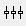
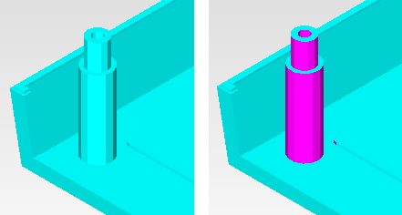

By default, non-planar
faces are highlighted in magenta.
Procedure
- To un-highlight
non-planar faces, click the Preferences icon  or choose to
open the Preferences dialog box.
- Uncheck the Highlight Non
Planar Faces check box and click OK.
Results
An example of un-highlighted and highlighted
non-planar faces is shown in Figure 1.
Figure 1. Un-Highlighted and Highlighted
Non-Planar Face